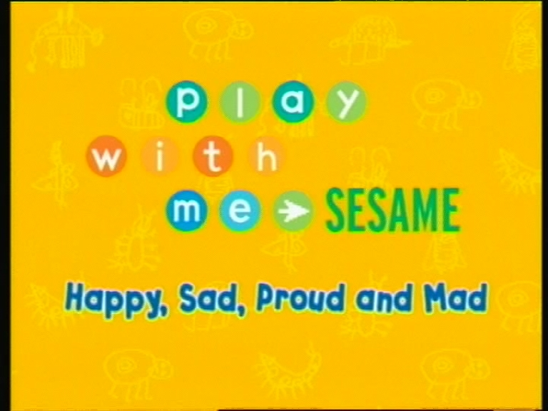

Brinca Comigo (Season 3)
RTP2 (formerly)
DVD
Santa Claus (Seasons 1-2)
RTP (Season 3)
|
|---|
| Titles: Abre-te Sésamo Brinca Comigo (Season 3) RTP2 (formerly) DVD Santa Claus (Seasons 1-2) RTP (Season 3) |
|  |
|---|
| Contente, Triste, Orgulhoso E Aborrecido archive.org |